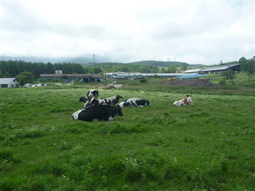
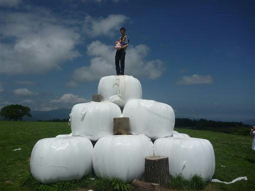
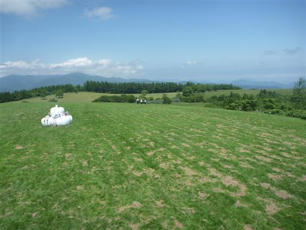
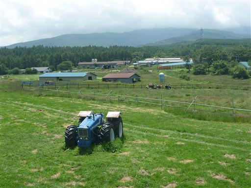

白駒池・霧ヶ峰・美ヶ原旅行
| 日付 | 2011年7月21日（木） - 2011年7月23日（土） | |||||
|---|---|---|---|---|---|---|
| 山域 | 八ヶ岳 | |||||
| メンバー | 家族（妻、長女・0歳） | |||||
| 山行形態 | 子連れ2泊3日ホテル泊 | |||||
| アクセス | 車 | |||||
| ルート |
|
3日目
2泊お世話になった宿を後にする。白樺湖畔からは霧ヶ峰を望める。
標高1900mを超える山なのだが、ここから見ると低い丘にしか見えない。
白樺湖の標高は1400m程度なので仕方ないのだが…
長門牧場に寄ってから帰ることにする。

干し草がピラミッド状に積まれていて、登れるようになっている。

上に登ると広い牧場の展望が広がる。
霧ヶ峰、美ヶ原、蓼科山に囲まれた、良いロケーションの牧場だ。

牧場を後にし、一路関東に戻る。
長時間のベビーキャリー、厳しい日差しはきつそうだったが、
初めての旅行にしては、そこそこ上手くいった。

他の山行記録